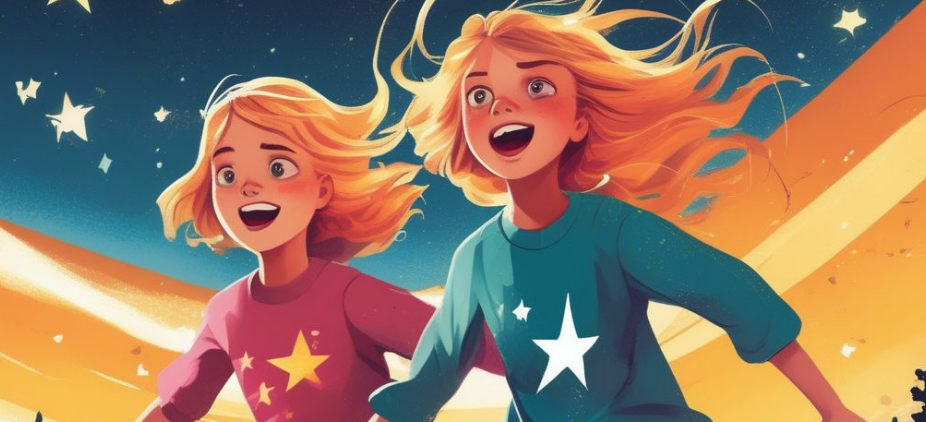

Once Upon a Page
Once Upon a Page

Number the Stars
A Danish girl helps her Jewish friend escape during World War II.
Why Are You Running?

Ten-year-old Annmarie Johansen wants to race her best friend Ellen Rosen home from school through the streets of their Copenhagen neighborhood, but Ellen wants to walk. When Annemarie pleads, though, insisting she needs to practice for an upcoming race at school, Ellen acquiesces, and the two take off down the sidewalk. Annemarie’s little sister Kirsti, who has been walking with them, asks them to wait up, but the older girls don’t even hear her.
As Annemarie and Ellen arrive at the corner, they run smack into two German soldiers who are stationed at the end of the block wearing shiny boots and holding rifles. The soldiers demand to know why the girls are running and ask what they’re carrying in their backpacks. Both Ellen and Annemarie insist that they are just schoolgirls having fun on their way home. One of the soldiers tries to touch Kirsti’s blonde hair, stating that she reminds him of his own daughter back in Germany, but Kirsti pulls away from him. After a tense moment, the soldiers send the girls home—but warn them not to run the rest of the way there.
Annemarie, Ellen, and Kirsti arrive back at the apartment building where they all live. Ellen tells Annemarie how scared she was, face-to-face with the soldiers, and Annemarie admits that she, too, was frightened. Kirsti, though, seems to have forgotten about the incident already, and chatters about school and homework. To the five-year-old Kirsti, the soldiers are “simply part of the landscape.”
Ellen and Annemarie agree not to tell their mothers about the incident, for fear of upsetting them. Ellen goes into her apartment on the second floor, and Annemarie and Kirsti head up to their apartment on the third floor. Kirsti bursts in the door and begins telling her mother all about their encounter with the soldier— Annemarie’s mother Mrs. Johansen is sitting with Mrs. Rosen at the kitchen table. The women are having “coffee,” as they do most afternoons, though there hasn’t been coffee in Copenhagen “since the beginning of the Nazi occupation.” The women drink hot water and herbs now, but still enjoy one another’s company.